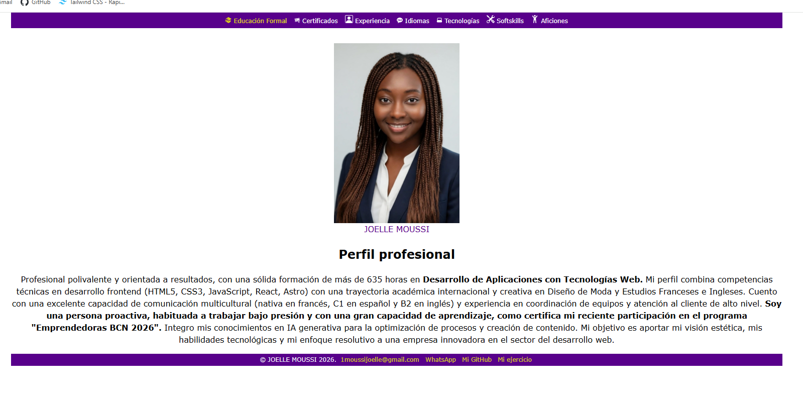
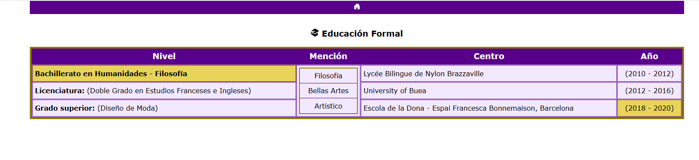
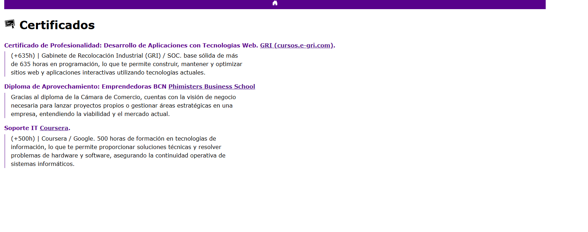

Résumé détaillé du processus : CV multipage en HTML, passage au Tailwind CSS
Ce document est rédigé en français pour ta révision et pour le coller dans Google Docs. Les textes du curriculum sur le site restent en castillan (lang="es", titres, navigation) ; ici on décrit uniquement le travail technique (HTML + classes Tailwind).
Coller dans Google Docs
Ouvre ce fichier dans le navigateur (double-clic sur repaso-examen-fr.html).
Ctrl+A, puis Ctrl+C.
Dans un document Google Docs : Ctrl+V. Applique « Titre 1 / Titre 2 » aux gros titres si besoin.
Images : si une image ne s’affiche pas, c’est qu’il manque le fichier dans img/repaso/ (voir légende sous chaque figure). Tu peux aussi faire une capture (Win+Maj+S), enregistrer le PNG avec le nom indiqué, rouvrir ce HTML : l’image apparaîtra ; recopie ensuite dans Docs (les captures collées depuis le navigateur passent mieux quand le fichier image existe).
Rappel
Avant : feuilles de style externes (estilos.css, etc.). Après : une ligne CDN Tailwind dans chaque page et des classes utilitaires sur les balises. Même structure HTML (liens, tableaux, details, dl, carte cliquable, vidéo).
Étape 0 — Point de départ
Tu partais d’un CV en plusieurs fichiers HTML stylés avec du CSS classique (sélecteurs dans des fichiers .css). Objectif : reproduire le même rendu en utilisant surtout Tailwind (classes dans le HTML), sans installer Node pour ce projet : utilisation du script CDN officiel.
Étape 1 — Activer Tailwind sur toutes les pages
Sur chaque fichier HTML du CV, dans le <head> :
Supprimer (ou ne plus utiliser) la balise <link rel="stylesheet" href="…/estilos.css"> pour le style principal.
Le navigateur télécharge Tailwind et génère les styles à partir des classes présentes dans la page. Aucune compilation locale n’est nécessaire.
Étape 2 — index.html (accueil)
Rôle : navigation vers toutes les rubriques, photo, nom, paragraphe « Perfil profesional », pied de page avec mail et liens.
Tailwind utilisé (exemples) :
Corps : mx-auto w-[80%], police avec crochets pour les noms de fontes.
En-tête violet : bg-[#58008b], text-white.
Navigation : flex flex-wrap items-center justify-center gap-x-2 gap-y-1 ; liens avec inline-flex items-center gap-1, jaune ou blanc selon le lien (text-[rgba(251,255,0,0.829)]).
SVG : taille h-4 w-4 shrink-0, aria-hidden="true" pour l’accessibilité.
Pied de page : encore bg-[#58008b], liens dorés text-[rgba(236,240,6,0.829)].

Figure 1 — Rendu de index.html. Fichier optionnel : enregistre ta capture sous img/repaso/01-accueil.png pour qu’elle s’affiche ici et au collage depuis le navigateur.
Étape 3 — educación.html (formation)
Rôle : tableau « Educación Formal » avec colonnes Nivel, Mención, Centro, Año ; en-tête avec lien maison vers index.html.
En-têtes de colonnes : fond bg-[#58008b], texte blanc.
Cellules lavande : bg-[#f3e9ff] ; lignes mises en avant : bg-[#e8d45a].
Colonne « Mención » : rowspan="3" ; à l’intérieur un div en flex colonne avec border-2 border-[rgb(139,125,0)] et trois blancs bg-white (Filosofía, Bellas Artes, Artístico).

Figure 2 — Tableau de formation. Fichier optionnel : img/repaso/02-educacion.png
Étape 4 — experiencia.html
Rôle : titre « Experiencia Profesional », blocs repliables par poste.
HTML sémantique : chaque expérience est un <details> avec <summary> ; le premier bloc a l’attribut open pour être déplié au chargement.
Tailwind : fond jaune du bloc bg-[#e4cf15], bandeau du summary bg-[#58008b] text-white, marges mb-8 py-[10px].
Figure 3 — img/repaso/03-experiencia.png
Étape 5 — certificados.html
Rôle : liste de certificats avec titre aligné à gauche et paragraphes descriptifs.
HTML :<dl> avec <dt> / <dd> ; liens externes avec target="_blank" rel="noopener noreferrer".
Tailwind : titres font-bold text-[#58008b], définitions avec bordure gauche violette et max-w-[65ch] pour la lisibilité.

Figure 4 — img/repaso/04-certificados.png
Étape 6 — Idiomas.html
Rôle : carte du monde SVG cliquable, sections par pays (ancres #espana, etc.).
HTML :<img src="img/world.svg" usemap="#image-map"> et <map> avec <area> (polygone ou rectangle).
Tailwind : image responsive w-full max-w-[1100px] h-auto, titre centré avec flex-wrap et tailles md:text-3xl.
Figure 5 — Fichier réel du dépôt : img/world.svg (tu peux aussi ajouter img/repaso/05-idiomas.png pour une capture pleine page).
Étape 7 — tecnologia.html
Rôle : liste des technologies (développement web, Git, bases de données).